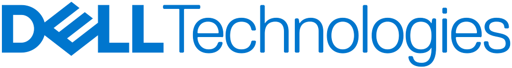
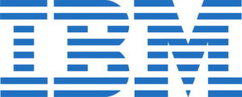
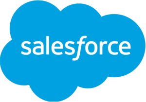
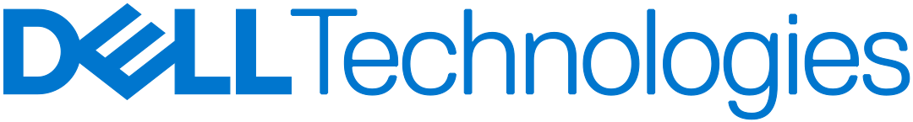
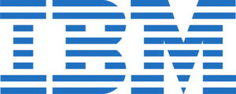
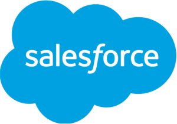
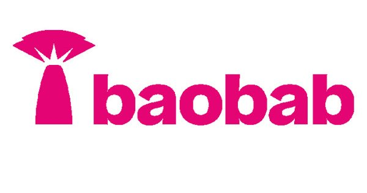
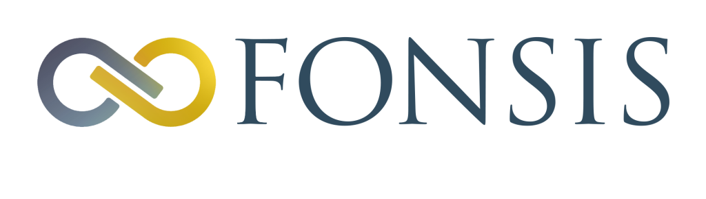
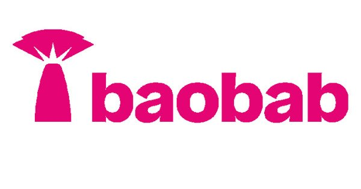
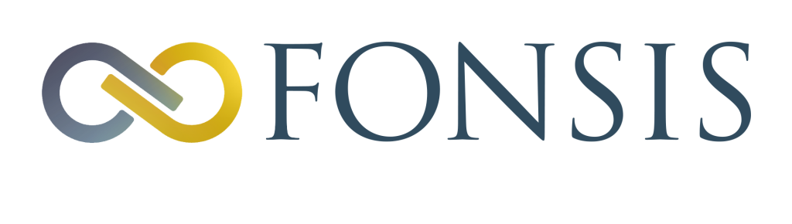

Portfolio Stage
Aminata Oumou Rassoul Ngom
Bienvenue sur mon portfolio de stage, je m’appelle Aminata Oumou Rassoul Ngom, étudiante en deuxième année de BUT Informatique à l’IUT Nord Franche-Comté de Belfort. J’ai réalisé celui-ci à l’occasion de mon stage effectué du au au sein de ATOS Sénégal. Vous y trouverez une présentation de l’entreprise, les compétences et langages que j’ai acquis ou perfectionnés à travers les projets que j’ai pu réaliser, et pour finir un bilan qui retrace les défis que j’ai eu à relever et les solutions que j’ai dû adopter.
Découvrir les partenaires d'ATOSÀ propos d’Atos Sénégal
Atos Sénégal fait partie du groupe Atos SE, spécialiste mondial des services numériques. Implantée localement, l’équipe accompagne les organisations dans la modernisation de leur infrastructure IT, la sécurisation des données et le passage au cloud.
Présence et expertise
Grâce à son maillage dans plus de 60 pays, Atos combine une vision globale et une connaissance fine des enjeux locaux. Ses experts métiers déploient des solutions adaptées aux marchés africains, tout en s’appuyant sur les meilleures technologies internationales.
 





 




La mission de l’entreprise
La mission d’Atos Sénégal est d’aider ses clients à tirer parti des technologies pour gagner en performance et en agilité, tout en réduisant leur impact environnemental.
Quelques chiffres clés
Plus de 2 500 projets menés chaque année, 68 000 collaborateurs dans le groupe, un chiffre d’affaires de 9,577 milliards d’euros en 2024, et un portefeuille de clients diversifié (secteur public, finance, santé, industrie).